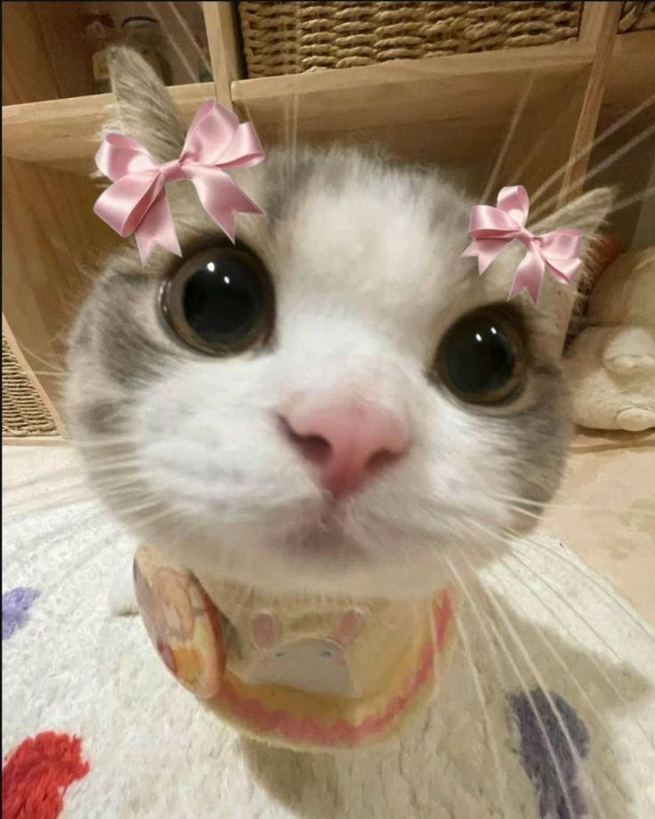
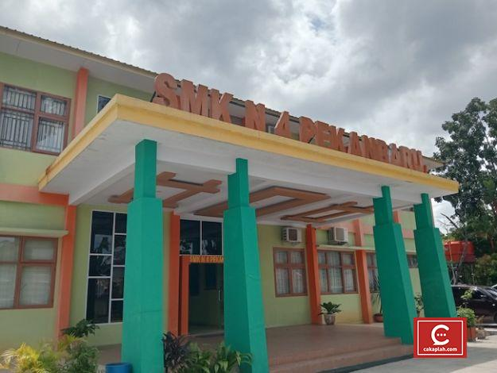

ANNYEONG!
sebelum lanjut dengar musik dulu say

Ayu Cute 🦝
aku Ayu, Keliatan nya rame(suka ketawa), tapi sering tenggelam dalam pikiran sendiri. Suka hal-hal kecil yang hangat—drama Korea, lagu sendu, catatan puitis. Nggak gampang percaya orang, tapi kalau udah sayang, bakal peduli banget. Lagi belajar jaga diri, pelan-pelan ngerti hidup, dan nikmati tiap rasa yang datang.
Aku suka hal-hal asik, termasuk asik sendiri. Banyak orang bilang wajahku mirip Jennie Blackpink, tapi aku tetap rendah hati ,gak sombong, kalo ada yang minta tanda tangan juga aku kasih

Biodata Sekolah
🏫 Nama Sekolah: SMK NEGERI 4 PEKANBARU
📍 Alamat: Jl. Purwodadi No.Kelurahan, Sidomulyo Bar., Kec. Tampan, Kota Pekanbaru, Riau 28294
⏳ Tahun Masuk: 2023
🎓 Jurusan: TEKINK KOMPUTER JARINGAN
⭐ Kelas: XI TKJ 1

Biodata Kucing
🐱 Nama: ITATA
🎂 Umur: 2 tahun
🐾 Ras: DOMESTIK
❤️ Hobi: Tidur & Makan
⭐ Keunikan:Ngerti kalo dipanggil